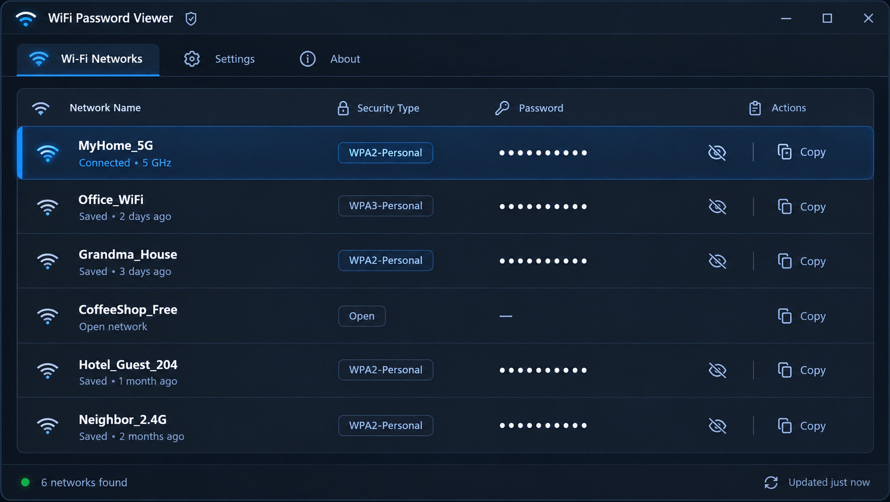

View Saved WiFi Passwords on Windows Instantly
Free, portable, open source. No installation, no internet connection, no ads.
For Windows 10 and Windows 11, 32-bit and 64-bit
Try it: click the eye icon to reveal a password.
- 200+ stars on GitHub
- Open source under the MIT license
- No telemetry, works fully offline
How it works
Windows already keeps the password for every network you have joined. The app simply shows you what is stored.
-
1. Download and run
Unzip and open the .exe. Nothing to install.
-
2. App reads saved networks
Every network your PC has joined appears in one list.
-
3. Click to reveal the password
Press the eye icon, then copy it with one click.
Everything you need to recover a WiFi password
A single window that lists your saved networks, their security type and the password for each one.

-
View all saved WiFi passwords on Windows
See every WiFi network your PC has ever connected to, along with its saved password, in a single list. No need to open Command Prompt or dig through Network Settings.
-
Show a saved password with one click
Click the eye icon next to any network to instantly reveal its password. No typing commands, no admin tools, no guesswork.
-
Copy the password to your clipboard
One click copies the password, ready to paste into a message, an email, or another device's WiFi settings.
-
Recover forgotten passwords without router access
As long as your PC has connected to that network before, you can recover the password without logging into your router.
-
Export to CSV or TXT
Save all network names and passwords to a file for backups, moving to a new PC, or an offline record of your home network.
-
Works 100% offline
The app never connects to the internet. Every password is read directly from Windows and stays on your device.
Why WiFi Password Viewer
There are two other ways to find a saved WiFi password on Windows. Here is how they compare.
| Feature | This app | Command Prompt | Router login |
|---|---|---|---|
| No typing commands | |||
| Works without router access | |||
| Copy with one click | |||
| All saved networks in one list | |||
| Export to CSV or TXT |
In Command Prompt you type netsh wlan show profile name="MyHome_5G" key=clear for each network, one at a time.
Frequently asked questions
Can't find your answer? Open an issue on GitHub.
Is it safe to use?
Yes. WiFi Password Viewer only reads WiFi profiles that Windows has already stored on your own PC. It does not connect to the internet or send data anywhere, and the full source code is on GitHub for anyone to review.
Does it work on Windows 11?
Yes. WiFi Password Viewer works on Windows 11 and Windows 10, in both 32-bit and 64-bit editions. It is a portable .exe, so you can run it on any of them without installing anything.
Where does Windows store WiFi passwords?
Windows keeps each network's password in an encrypted WLAN profile on your PC, under C:\ProgramData\Microsoft\Wlansvc\Profiles. WiFi Password Viewer decodes these profiles locally and shows the passwords in plain text.
Why does the app show no networks?
On some systems Windows only allows administrators to read saved WiFi passwords. Right-click WiFiPasswordViewer.exe and choose "Run as administrator". If the list is still empty, this PC has not saved any WiFi networks yet.
Do I need admin rights?
Not always. Many PCs show the list with normal rights, but some Windows setups require administrator access to read passwords. If no networks appear, right-click the .exe and choose "Run as administrator".
Ready to see your saved WiFi passwords?
Free for Windows 10 and 11. No installation required.